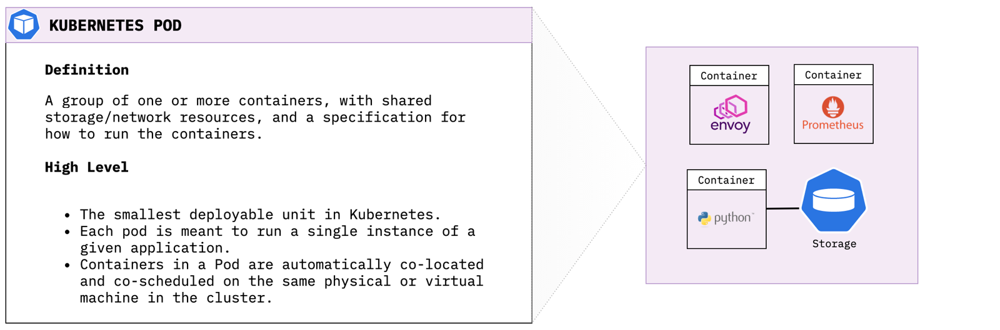
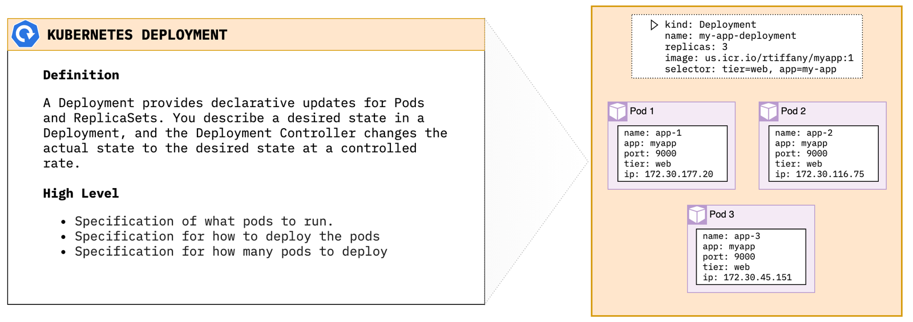
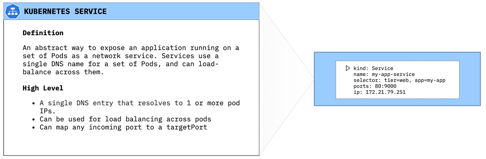
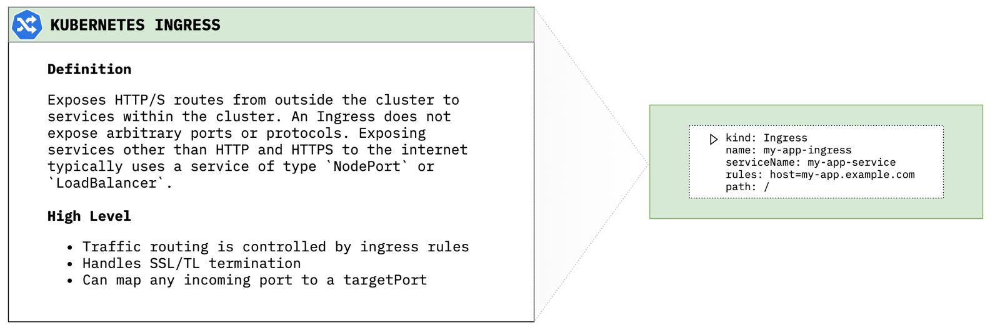

Overview
Kubernetes is a container orchestrator to provision, manage, and scale applications. In other words, Kubernetes allows you to manage the lifecycle of containerized applications within a cluster of nodes (which are a collection of worker machines, for example, VMs, physical machines etc.).
Kubernetes does not have the concept of an application. It has simple building blocks that you are required to compose. Kubernetes is a cloud native platform where the internal resource model is the same as the end user resource model.
Key Components of Kubernetes
Pods
A Pod is the smallest object model that you can create and run. You can add labels to a pod to identify a subset to run operations on. When you are ready to scale your application you can use the label to tell Kubernetes which Pod you need to scale. When we talk about a application, we usually refer to group of Pods. Although an entire application can be run in a single Pod, we usually build multiple Pods that talk to each other to make a useful application

Creating a Kubernetes Pod Use the following command to launch a simple busybox container as a Kubernetes pod:
cat <<EOF | kubectl apply -f -
apiVersion: v1
kind: Pod
metadata:
name: busybox-sleep
spec:
containers:
- name: busybox
image: busybox
args:
- sleep
- "1000000"
EOF
Describe Pod Resource
Use the kubectl describe command to get more information about our running pod:
While it is trivial to launch a pod within Kubernetes in order to scale I would need to manually create new pods everytime I need the service to be more elastic. This is where Deployments come in to play.
Deployments
A Deployment provides declarative updates for Pods and ReplicaSets. You describe a desired state in a Deployment, and the Deployment Controller changes the actual state to the desired state at a controlled rate.

Creating a Kubernetes Deployment Use the following command to launch a set of 3 nginx pods:
cat <<EOF | kubectl apply -f -
apiVersion: apps/v1
kind: Deployment
metadata:
name: nginx-deploy
spec:
replicas: 3
selector:
matchLabels:
app: nginx
template:
metadata:
labels:
app: nginx
spec:
containers:
- name: nginx-container
image: nginx
ports:
- containerPort: 80
EOF
Describe Deployment Resource
Use the kubectl describe command to get more information about our new deployment:
Now if K8s sees that my nginx deployment only has 2 running pods, it will create an additional pod to meet the deployment specification. So I've now got my nginx containers running within my cluster, but how do outside users and other cluster resources find them? Enter Services.
Services
A Service is an abstract way to expose an application running on a set of Pods as a network service. Services use a single DNS name for a set of Pods, and can load-balance across them. The set of Pods targeted by a Service is usually determined by a selector (in our case app=nginx).

Deploying a service
cat <<EOF | kubectl apply -f -
apiVersion: v1
kind: Service
metadata:
name: nginx-svc
labels:
app: nginx
spec:
selector:
app: nginx
ports:
- protocol: TCP
port: 80
EOF
Describe Service Resource
Use the kubectl describe command to get more information about our new service:
One thing you will notice when looking at the service config is Type: ClusterIP. Kubernetes comes with 3 primary ways to expose resources via Services. If you do not specifically set a type, Kubernetes will default to ClusterIP.
ClusterIP
Exposes the Service on a cluster-internal IP. Choosing this value makes the Service only reachable from within the cluster. This is the default ServiceType.
NodePort
Exposes the Service on each Node's IP at a static port (the NodePort). A ClusterIP Service, to which the NodePort Service routes, is automatically created. You'll be able to contact the NodePort Service, from outside the cluster, by requesting
Deploying a NodePort type service
cat <<EOF | kubectl apply -f -
apiVersion: v1
kind: Service
metadata:
name: nginx-svc-np
labels:
app: nginx
spec:
type: NodePort
selector:
app: nginx
ports:
- protocol: TCP
port: 80
EOF
Pull NodePort
You can pull the assigned port using the kubect get command and jq:
LoadBalancer
Exposes the Service externally using a cloud provider's load balancer. The NodePort and ClusterIP Services, to which the external load balancer routes, are automatically created when using Type: LoadBalancer.
Deploying a LoadBalancer type service
cat <<EOF | kubectl apply -f -
apiVersion: v1
kind: Service
metadata:
name: nginx-svc-lb
labels:
app: nginx
spec:
type: LoadBalancer
selector:
app: nginx
ports:
- protocol: TCP
port: 80
EOF
Find external loadBalancer IP
Use curl to verify connectivity from outside the cluster to your newly created Loadbalancer service.
rtiffany@cloudshell:~$ kubectl get svc/nginx-svc-lb -o json | jq -r '.status.loadBalancer.ingress[].ip'
169.48.252.133
rtiffany@cloudshell:~$ curl 169.48.252.133
<!DOCTYPE html>
<html>
<head>
<title>Welcome to nginx!</title>
<style>
body {
width: 35em;
margin: 0 auto;
font-family: Tahoma, Verdana, Arial, sans-serif;
}
</style>
</head>
<body>
<h1>Welcome to nginx!</h1>
<p>If you see this page, the nginx web server is successfully installed and
working. Further configuration is required.</p>
<p>For online documentation and support please refer to
<a href="http://nginx.org/">nginx.org</a>.<br/>
Commercial support is available at
<a href="http://nginx.com/">nginx.com</a>.</p>
<p><em>Thank you for using nginx.</em></p>
</body>
</html>
Ingress
Exposes HTTP/S routes from outside the cluster to services within the cluster. An Ingress does not expose arbitrary ports or protocols. Exposing services other than HTTP and HTTPS to the internet typically uses a service of type NodePort or LoadBalancer.

Deploy an ingress This will deploy a an ingress that says when traffic for test-ingress.cdetesting.com hits the cluster it will be routed to the service nginx-svc within the cluster.
cat <<EOF | kubectl apply -f -
apiVersion: extensions/v1beta1
kind: Ingress
metadata:
name: nginx-ingress
spec:
rules:
- host: test-ingress.cdetesting.com
http:
paths:
- backend:
serviceName: nginx-svc
servicePort: 80
path: /
EOF
Pointing the domain at the cluster In order to get test-ingress.cdetesting.com to resolve to my Kubernetes cluster I created the CNAME test-ingress for the cdetesting.com domain and pointed it at my IKS ingress hostname. You can find your ingress hostname by running the following command:
Persistent Storage
Namespaces
Secrets
Kubernetes application deployment workflow

- User via "kubectl" deploys a new application. Kubectl sends the request to the API Server.
- API server receives the request and stores it in the data store (etcd). Once the request is written to data store, the API server is done with the request.
- Watchers detects the resource changes and send a notification to controller to act upon it
- Controller detects the new app and creates new pods to match the desired number# of instances. Any changes to the stored model will be picked up to create or delete Pods.
- Scheduler assigns new pods to a Node based on a criteria. Scheduler makes decisions to run Pods on specific Nodes in the cluster. Scheduler modifies the model with the node information.
- Kubelet on a node detects a pod with an assignment to itself, and deploys the requested containers via the container runtime (e.g. Docker). Each Node watches the storage to see what pods it is assigned to run. It takes necessary actions on resource assigned to it like create/delete Pods.
- Kubeproxy manages network traffic for the pods – including service discovery and load-balancing. Kubeproxy is responsible for communication between Pods that want to interact.
Extending Kubernetes
- Sidecar container: a separate container that performs its own function distinct from the application container.
- Istio uses a Sidecar proxy to mediate inbound and outbound communication to the workload instance it is attached to.
- Custom Resource Definitions:
- IBM Cloud Databases use CRD's to deploy to the IBM Cloud.